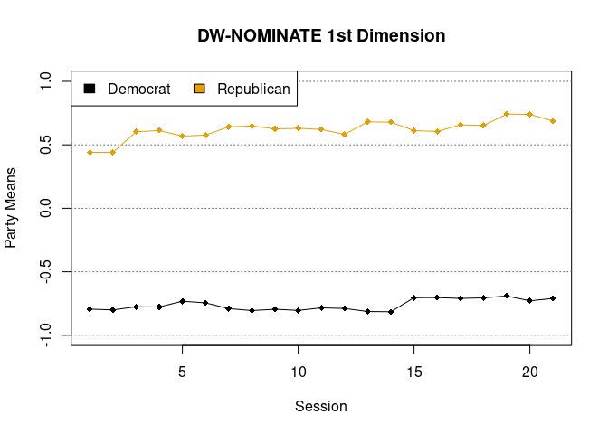

dwnominate provides a simplified R interface to the DW-NOMINATE roll call scaling program, based on the Fortran source code available at Keith Poole’s website.
DW-NOMINATE (Dynamic Weighted NOMINAl Three-step Estimation) estimates dynamic models of legislator ideology using roll call votes, and can efficiently estimate static ideology models across multiple legislative sessions. The results can be used to measure legislative ideology and polarization over time.
Installation
Installation requires a Fortran compiler as well as BLAS and LAPACK libraries. On Windows these are conveniently available as part of Rtools. MacOS includes BLAS and LAPACK, so it only requires installing a Fortran compiler. I recommend following the advice provided by CRAN here. On Linux these will be installed with the r-base-dev library (or the equivalent for your distribution).
Once the dependencies are satisfied, the package can be installed from R by running:
install.packages('remotes')
remotes::install_github('wmay/dwnominate')Running DW-NOMINATE
DW-NOMINATE is run via the dwnominate function, which takes as its main argument a list of rollcall objects from the pscl package. The package includes data from the New Hampshire State Senate for use in examples.
library(dwnominate)
data(nhsenate) # a list of `rollcall` objects
results <- dwnominate(nhsenate)
plot(results)
The results are returned as a dwnominate object with estimates of legislator and roll call coordinates. Get detailed information about DW-NOMINATE options with ?dwnominate and help(package=dwnominate).